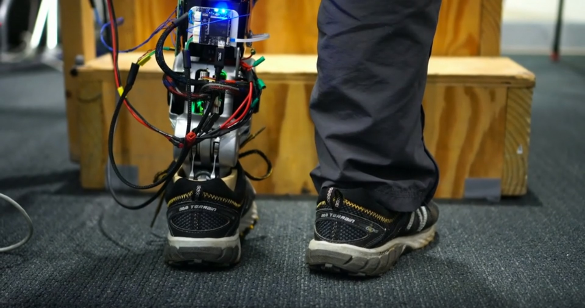

How We'll Become Cyborgs And Extend Human Potential
Humans will soon have new bodies that forever blur the line between the natural and synthetic worlds, says bionics designer Hugh Herr. In an unforgettable talk, he details "NeuroEmbodied Design," a methodology for creating cyborg function that he's developing at the MIT Media Lab, and shows us a future where we've augmented our bodies in a way that will redefine human potential -- and, maybe, turn us into superheroes. "During the twilight years of this century, I believe humans will be unrecognizable in morphology and dynamics from what we are today," Herr says. "Humanity will take flight and soar."
At MIT, we're thinking about NeuroEmbodied Design. In this design process, the designer designs human flesh and bone, the biological body itself, along with synthetics to enhance the bidirectional communication between the nervous system and the built world. NeuroEmbodied Design is a methodology to create cyborg function. In this design process, designers contemplate a future in which technology no longer compromises separate, lifeless tools from our minds and our bodies, a future in which technology has been carefully integrated within our nature, a world in which what is biological and what is not, what is human and what is not, what is nature and what is not will be forever blurred. That future will provide humanity new bodies. NeuroEmbodied Design will extend our nervous systems into the synthetic world, and the synthetic world into us, fundamentally changing who we are. By designing the biological body to better communicate with the built design world, humanity will end disability in this 21st century and establish the scientific and technological basis for human augmentation, extending human capability beyond innate, physiological levels, cognitively, emotionally and physically.